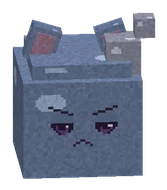
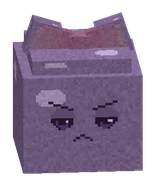
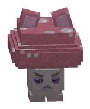
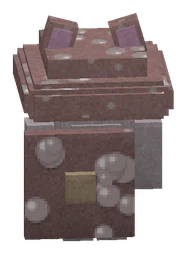
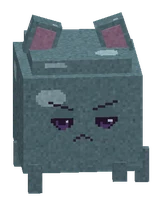
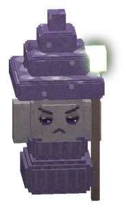
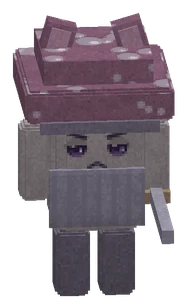
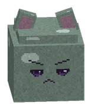

CreaturesWezens
Every grumpy creature you can cheer up, with its levels, element, where it lives and how to beat it. Bosses have their own pages.Elk chagrijnig wezen dat je kunt opvrolijken, met levels, element, waar het woont en hoe je het verslaat. Bazen hebben een eigen pagina. BossesBazen.
15 creatureswezens
| NameNaam | Zone | Level | Element | WhereWaar | Tip |
|---|---|---|---|---|---|
 Klodder Klodder | De Knuffelzwammen | 1-4 | water | Klodderweide | |
 Bubbelklodder | De Knuffelzwammen | 2-5 | water | Klodderweide | |
 Stuiterklodder Stuiterklodder | De Knuffelzwammen | 3-6 | water | Klodderweide | |
 Moederklodder | De Knuffelzwammen | 5-6 | water | Klodderweide | |
 Hoedjesbol | De Knuffelzwammen | 6-10 | natuur | Sporenwoud, De Zwamgrot | |
 Sporenpuffer Sporenpuffer | De Knuffelzwammen | 7-11 | natuur | Sporenwoud, De Zwamgrot | Blijf uit de groene wolk: die geeft Gesporen (schade en minder heling). |
 Mosgeest Mosgeest | De Knuffelzwammen | 8-13 | natuur | Sporenwoud | Een Mosgeest zwiept soms opzij. Blijf erbij, hij kan niet altijd ontwijken. |
 Zwamwachter | De Knuffelzwammen | 9-13 | natuur | Sporenwoud, De Zwamgrot | Van voren blokt hij met zijn hoedschild. Loop om hem heen of sla hem net nadat hij zelf heeft uitgehaald! |
 Druipslijm | De Knuffelzwammen | 12-16 | water | Druipgrotten | |
 Grauwe Knaag Grauwe Knaag | De Knuffelzwammen | 12-17 | Druipgrotten | ||
 Glimzwam Glimzwam | De Knuffelzwammen | 13-18 | natuur | Druipgrotten | De Glimzwam heelt de wezens om hem heen. Vrolijk hem als eerste op! |
 Kristalklodder Kristalklodder | De Knuffelzwammen | 13-17 | water | Druipgrotten | Zijn kristallen weerkaatsen soms spreuken. Gewone klappen werken altijd. |
 Sporenpriester | De Knuffelzwammen | 18-20 | natuur | De Zwamtempel | |
 Tempelzwam-ridder | De Knuffelzwammen | 18-20 | natuur | Het Vadsrijk, De Zwamtempel | Zie je de rode strook? Dat is zijn zwaai. Stap opzij! |
 Kloddertje | De Knuffelzwammen |
Peaceful crittersVredige diertjes
| NameNaam | Zone | Level | Element | WhereWaar | Tip |
|---|